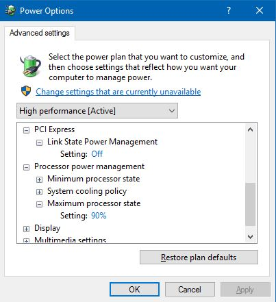
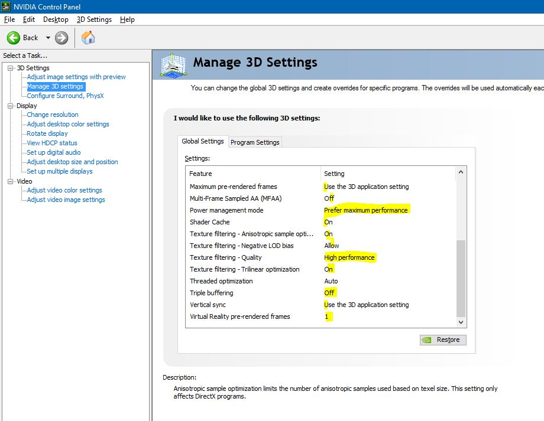
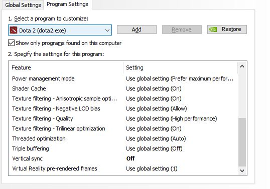
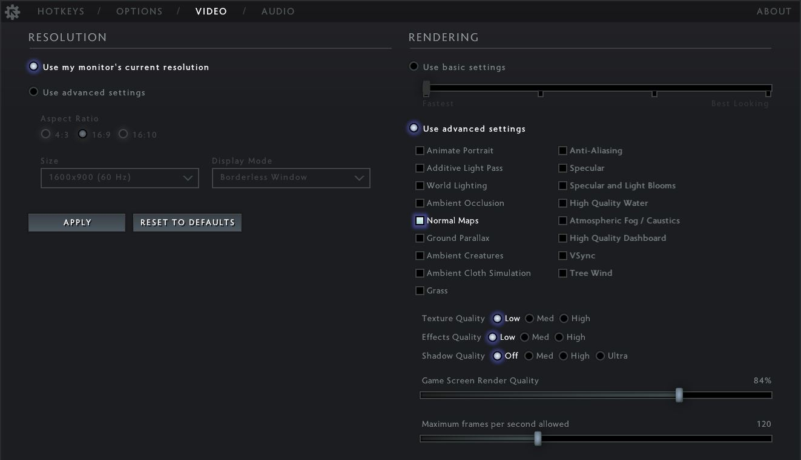
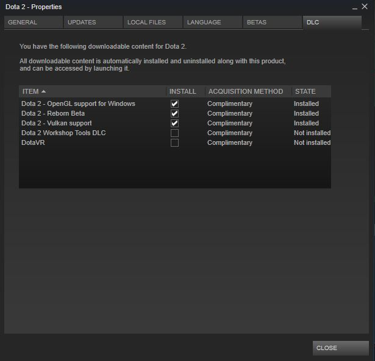
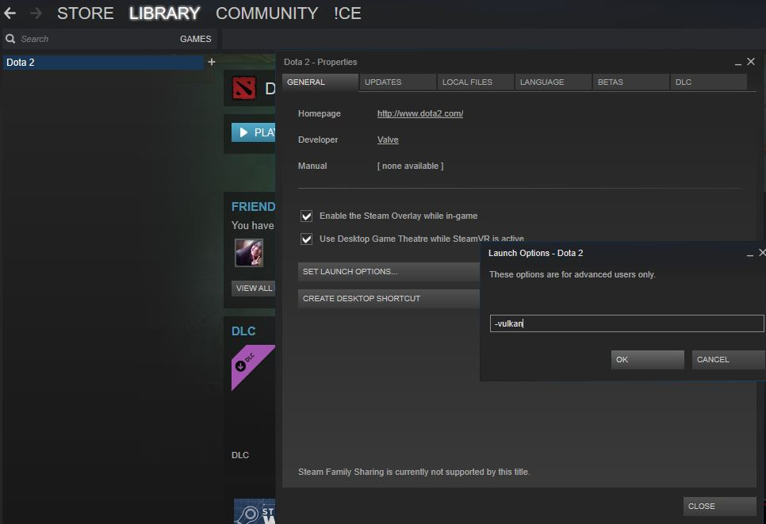

Dota 2 has gone through some tremendous updates in 7.0 version. The part which I liked was the new clean interface and MK.
Now speaking of the problems we found a huge loss in FPS (which was shockingly bad) and bad crashes(Either Dota or system)
Here are the changes that I would like to share :
- In case whole Computer freeze with a buzz sound in Windows 10 or 8 during game : First Goto Control Panel : Power options -> Change Plan settings (for the active plan) then make the below changes : PCI Link state Power control ->OFF and Processor power management->maximum power -> 90%

- To improve FPS change below settings in NVIDIA control panel :   Also make changes in Dota 2 Video settings as below: 
- In case you have AMD based GPU you may want to use : vulkan or in case of nvidia gpu (average graphics cards) : Opengl. To enable Vulkan or OpenGL support just goto Steam libraries -> Dota2 -> Right Click-> Properties and mark below check boxes under DLC. After that to enable vulkan goto General Tab -> Set Launch Options : -vulkan (for vulkan) or -gl (for OPenGL).  I have increase my FPS (from 40 to 120 ) and solved Windows 10 freeze in Dota 2 by this . Let me know in case of any query. Hope it helps.